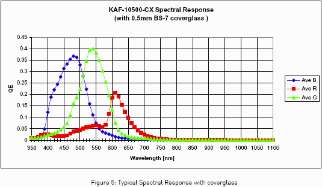
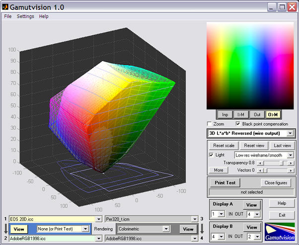
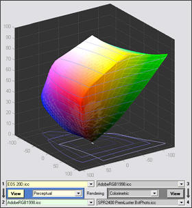
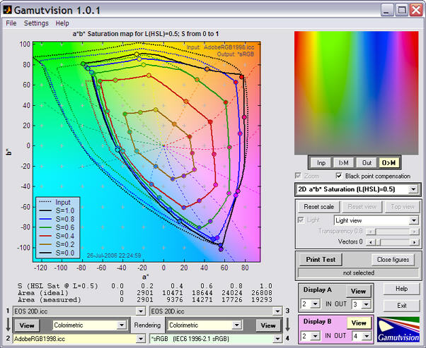
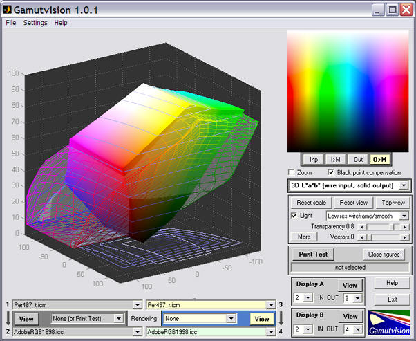
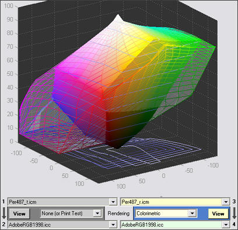
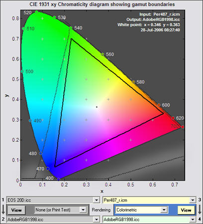

Gamutvision can display plots that apprear to represent the color gamut of input devices— scanners and cameras— but these plots must be interpreted with caution because the RGB input pattern used by Gamutvision (and other gamut viewers) are likely to contain RGB values that can never be produced by most cameras or scanners in response to real, physical light. Hence the actual gamut is typically smaller than the displayed gamut. The reason is illustrated below in Kodak's published spectral response for the Kodak KAF-10500-CX image sensor used in the Leica M8.

There is considerable overlap between colors. That means that a sensor output that has not been processed (except possibly for linear scaling) can never include pure R (255,0,0), G (0,255,0), or B (0,0,255) signals. Of course some signal processing is likely to take place because the KAF-10500 sensor output is an analog voltage: conversion to a digital signal takes place outside the sensor chip, and is likely to include manufacturer-proprietary processing— even in RAW files.
Another observation from this figure is that the R:G:B voltage ratio is unique for any monochromatic (single-wavelength) signal inside the visual spectrum (about 380-720 namometers), hence the sensor can, in principle, distinguish any visible wavelength: it's gamut encompasses the full gamut of human vision. The actual gamut of a camera depends on the quality of the profile: on how well it handles strongly saturated colors. This can't be determined from a profile alone because it doesn't contain information on the relationship between all possible colorimetric values of illumination and a camera's RAW R,G,B values. Profiles are built from charts with limited numbers of color patches that cannot approach pure monochromatic values. They contain no information on which R,G,B values don't correspond to physical light.
Camera profiles are often installed along with raw conversion software. Likewise, scanner profiles are installed along with scanner control software. We use two manufacturer-supplied profiles as examples. Of course these aren't the last word in profile quality. Many users use profiling software to make their own profiles, with mostly pleasing results.
Some of your may have come across images of film gamut— usually displayed as CIE xy plots— (they're not very common). Film gamut diaplayed in these diagrams is quite large: larger than Adobe RGB (1998), though not equal to ultra-large gamut color spaces such as WGRGB or ProPhoto RGB.
It is important to realize that film gamut does not represent the range of film response to color : it is the range of colors that the film dyes can reproduce, ie. it is the film's output gamut. It has nothing to do with the film's response. For this reason, comparing film gamut to the gamut of digital cameras (or at least the "gamut" displayed by gamut viewer programs) is meaningless: it's about as classic an apples vs. oranges comparison as you can get.
EOS 20D.icc was apparently installed along with Canon's DPP (Digital Photo Professional) RAW conversion software, though I found no obvious means of selecting the camera profile in DPP. It certainly came from Canon— it bears their copyright. And there's no doubt which camera it's intended for. The first image is a 3D L*a*b* plot that shows the full gamut of the EOS 20D (solid; input profile 1) as well as the full gamut of the Adobe RGB (1998) color space (wireframe; output profile 2). All images on this page are somewhat reduced.

The display has been rotated to emphasize the differences between the profiles. Note that there is no gamut mapping in this diagram: the rendering intent has been set to None. Also, the normal 3D display order has been reversed: 3D L*a*b* Refersed (wire output) (i.e., solid input) has been selected. The normal 3D display (wireframe input, solid output) makes sense when the output gamut is smaller than the input gamut, as it is for most printer output profiles. But in this case, the EOS 20D gamut is slightly smaller than Adobe RGB (1998).
Of course a gamut mapping takes place when an image is transformed from camera to working color space. The 3D L*a*b* image of the mapped transformation is shown on the right: it's trivial. Since Adobe RGB (1998) has a slightly larger gamut than the EOS-20D, the final gamut is the same as the 20D. For this mapping, perceptual, colorimetric, and saturation rendering intents produce the same results. Absolute rendering intent does not work with this profile. These results suggest that Adobe RGB (1998) is the ideal working color space for use with the EOS-20D, since the camera's effective gamut can be no larger than the selected profile (EOS 20D.icc in this case). Larger gamut spaces would be wasted; some colors would be clipped with sRGB (a small gamut color space). EOS 20D.icc is a large profile: 213 kB. It contains three AToBn lookup tables (device to profile connection space; n = 0 for perceptual; 1 for colorimetric; 2 for saturation). Judging from the profile's behavior, the AToBn tables are all the same. |
 |
3D L*a*b* plots are only one of several types of Gamutvision display. The 2D a*b* saturation plot is also valuable for displaying color gamuts. The input to this plot is a chart consisting of all hues and saturations in HSL color representation, where L(HSL) = 0.5, which is the middle lightness value where color saturation reaches its maximum. Pure red (255,0,0), green (0,255,0), and blue (0,0,255) all have L = 0.5. (L in HSL color representation is not the same as L* in L*a*b* space.) The 2D s*b* saturation plot displays a*b* values for saturation S = {0, 0.2, 0.4, 0.6, 0.8, 1}.
The image below shows the results of two mappings: 1→2: EOS 20D.icc→AdobeRGB1998.icc, and 3→4: EOS 20D.icc→*sRGB. There are a number of ways the results can be displayed; the plot below takes advantage of Gamutvision's Display A/Display B feature, which allows any two results to be compared on the same plot— and to be quickly swiched.

The dashed lines are the Adobe RGB (1998) output, mapped with colorimetric rendering intent from EOS 20D.icc; the result of the 1→2 mapping (which gives the same results as perceptual and saturation intent for this profile). The solid lines are the sRGB output; the result of the 3→4 mapping. It is clear that Adobe RGB has a much larger gamut in the green to cyan range. The 2D a*b* saturation plot is excellent for comparing gamuts, but keep in mind that it only displays middle tones, where colors are most intense. It doesn't display gamut differences for highlights or shadows.
Epson flatbed scanners that include transparency units for scanning film come with two profiles: one for reflective operation, the other for transmissive operation, i.e., film scanning. For the 4870 the profiles are named Per487_r.icm and Per487_t.icm, respectively. Both are large: 193 kB. The gamut of the scanner in reflective mode is important because it affects the quality of Print Test results.

A quick look shows that the 4870 has similar gamuts in both reflective and transmissive modes and that the gamut is very large: it easily reaches the LittleCMS limits of ±128 for a* and b*. But Adobe RGB (1998) has a larger gamut for saturated highlight colors. This does not show up on any of the 2D plots. |
 |
When colorimetric rendering intent is applied, the output gamut fits within the input gamut. Light, saturated are apparently darkened slightly. |
|
The 2D xy chromaticity plot is shown on the right. This plot is less perceptually uniform than the a*b* diagram, but it has two advantages.
The Epson gamut (dotted line) extends well beyond the region of visible light, an impossible situation that can be explained by noting that the gamut is calculated using a set of pixel values, including the red and blue primaries, that would never be allowed in practice because they don't correspond to physical reality. This might be expected in a camera or scanner where highly saturated colors in a test chart produces relatively unsaturated RGB values. The Epson 4870's gamut cannot be as large as its profile indicates. The gamut boundary can only indicate the largest possible gamut a device can have, rather than the actual gamut. The boundary for the EOS-20D seems to be much more realistic. It would be interesting to compare the manufacturer's profiles (for both the Canon EOS-20D and the Epson 4870) with custom profiles. |
 |
| Input profiles represent devices such as cameras and scanners. They contain the tables that translate RGB input values to XYZ Profile Connection Space. But, alone among profile classes, there can be a wide range of RGB values that can never occur in practice. And there is nothing in the profile to indicate what these values are. An input profile therefore is not sufficient to characterize device gamut. Measurements of large gamut targets such as the IT8.7 or Colorchecker SG provides considerable information about device color response. These charts are supported by the Imatest Multicharts module. |
In the Gamut section of Michael Reichmann's Leica M8 - A Hands-on Field Review (about half-way down the page), Michael discusses the gamuts of various digital cameras, illustrating them with xy chromaticity diagrams derived from ICC profiles supplied by Phase One. Towards the end of this section he states,
The bottom line on this discussion is that the Leica M8 appears to have the widest colour gamut, by a wide margin, of any camera of which I am aware. Does this translate into any image quality advantage? According to Dr. Know, a friend who writes raw software, and who is extremely knowledgeable in this area, the answer is likely no. Gamut plots of camera profiles are not particularly meaningful and don't correlate with actual sensor or camera performance. But, nevertheless I have to think that we are seeing something at work here, if not just an indication of what electronic filtering is taking place inside the camera. If anyone really does understand the implications of what we're seeing here I would enjoy hearing from you. Please though – not what you guess, not what you imagine, but what you actually know to be at work here.
Here is my response. Michael felt it would go over the heads of most readers. (Note: "Dr. Know" is evidently Thomas Knoll, the original author of Photoshop.)
I wrote Gamutvision and Imatest so I (and others) could answer questions such as this.
The quick answer is that "Dr. Know" is correct. You can't derive a camera's gamut from its ICC profile. I had hoped to do so— a reasonable expectation since you can obtain accurate monitor, color space, and printer gamuts from profiles.
The reason is that gamut viewer programs start with a set of RGB pixel values that represent the RGB gamut limits— the most saturated possible RGB colors— then use the profile to transform these colors into a device-independent color space (CIE XYZ or CIELAB) that can represented by a familiar diagram like CIE xy. In a similar manner, camera output, which consists of de-mosaiced RGB values, is transformed by the profile into CIE XYZ for further conversion to the output color space (sRGB, Adobe RGB, ProPhoto, etc.).
Gamut viewers can't estimate camera gamut because most of the RGB values near gamut limits can never be output by the camera— and the profile contains no indication of which RGB values the camera can produce. All the profile does is map RGB values to corresponding device-independent CIE XYZ values, regardless of whether or not the camera can produce them— even if they don't correspond to physical reality. Colors close to those in the test chart used to create the profile should be mapped correctly, but anything can happen to RGB values that don't correspond to valid, physical colors: strange spikes and irregularities often appear in gamut representations. These irregularities are meaningless: they are computation artifacts that do not indicate how the profile handles real colors.
I alluded to this in a comment I made in Gerard Kingma's article on Gamutvision and PrintFIX PRO. "Gamutvision uses a test pattern with the most saturated possible RGB values, but the scanner may not ever output these values in practice. So the actual scanner gamut may be smaller than the gamut displayed by Gamutvision. No easy way around this..."
The boundaries of the CIE xy "horseshoe" diagram represent monochromatic light— anything outside the diagram is non-physical. The closed horseshoe represents the limits of human vision. Colors displayed by gamut viewers that are outside the horseshoe boundary correspond to RGB values that can never be produced by a camera in response to a real, physical stimulus. Their existence is clear evidence that gamut viewers can't produce valid results for camera or scanner profiles.
Camera gamut is primarily determined by the the sensor's spectral response or quantum efficiency, which can be found in the manufacturer's data sheets. Kodak publishes these curves for a great many sensors, including the KAF-10500 sensor used in the Leica M8, the KAF-39000 used in the Phase One P45 back. You can find them by navigating from www.kodak.com/go/imagers. It's not easy to calculate (or even define) total camera gamut, but we can make an important observation: digital cameras can detect all visible colors (roughly 380-720 namometers), and since each monochromatic (pure spectral) color appears to have a unique (R:G:B) ratio, all visible colors can be distinguished, and are potentially inside the camera's gamut. But the actual camera gamut depends on details of the implementation that can't be extracted from the ICC profile.
The shapes of the the spectral response (quantum efficiency) curves of the KAF-10500 and KAF-39000 are quite similar (an indication that their gamut is similar), but there is one interesting difference: red efficiency is much higher relative to blue and green in the KAF-39000. This means that R values output by the KAF-39000 will be larger, resulting in a weaker CIE XYZ value for pure red (255,0,0): a value neither sensor is ever likely to output. This result is clearly visible in your images, where the P45 appears to have a much weaker red response than the M8. But this is a gamut viewer artifact; it bears no relationship to the camera's true gamut.
Camera gamut is also affected by two other factors: lens flare and exposure. Lens flare tends to smudge the most intense colors, hence it reduces camera gamut in real-world situations. Leica lenses are renowned for having low flare. Exposure affects the measured gamut in rather complex ways— especially since many cameras have exposure strategies designed to match RAW conversion algorithms. For example, many cameras may underexpose relative to the ISO standard, then perform RAW conversion with a "shoulder" to reduce the likelihood of saturating highlights— a generally excellent strategy, but one that doesn't make gamut measurement easy. Overexposure always reduces the measured gamut.
The best way to measure a camera's color response is to photograph and analyze color a chart that includes relatively saturated colors. The 24-patch GretagMacbeth ColorChecker is insufficient for this purpose; the ColorChecker SG and the (relatively inexpensive) IT8.7 charts are much better. Imatest Multicharts supports both and provides a great deal of information about camera color response.